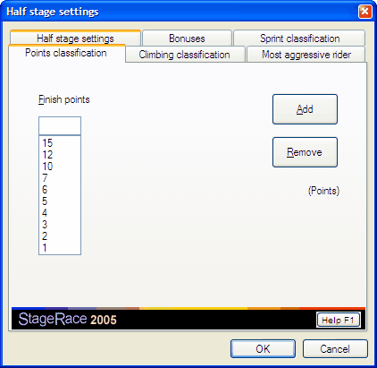

For every half stage you can set up a scheme of points for the points classification.
Points are awarded for the best riders in the stage arrival.
The sum of these points from every half stage will be used to calculate a general individual points classification from.
For points classifications a separate publication is generated, which lists the competitors and their points from the particular half stage arrival as well as the general points classification.
The configuration of points will be done by use of the tab sheet Points classification of the configuration of the particular half stage. This can be found through in the menu, when the appropriate half stage is selected in the event tree.

On the tab sheet there is a list Finish points to enter the points for the stage arrival. The points in this list correspond to the successive rankings, starting from 1.
To add points, the number of points has to be entered in the field above the particular list and Add has to be clicked.
There is no real limit to the amount of points entries that you can enter.
If a points entry is selected from the list, it can be deleted by clicking Remove.
By entering no points entries at all, the Points classification item will subsequently be removed from the event tree.